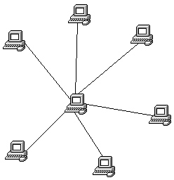
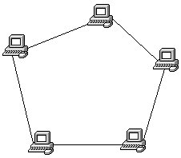

|
Grundlagen Computernetze
Prof. Jürgen Plate |
Logische Struktur von Netzen
In diesem Abschnitt wird ganz knapp die logische Struktur von Netzen behandelt,
also die Art und Weise, wie die einzelnen Stationen miteinander verbunden
werden. Bei der Verkabelung von LANs muß man aber zwischen logischer
Stuktur und Verkabelungsstruktur unterscheiden, z. B. kann ein Netz mit
logischer Busstruktur bei der Verkabelung mit 'Twisted Pair'-Kabeln wie
ein Sternnetz aussehen.
Sternstruktur
Alle Teilnehmer werden an einen zentralen Knoten angeschlossen (früher
z. B. häufig Anschluß von Sichtgeräten an einen Zentralrechner).
Eine direkte Kommunikation der Teilnehmer untereinander ist nicht möglich,
jegliche Kommunikation läuft über den zentralen Knoten (Punkt-zu-Punkt-Verbindung,
Leitungsvermittlung). Die Steuerung der Kommunikation vom Knoten aus ist
sehr einfach: Polling (regelmäßige Abfrage aller Stationen) oder
Steuerung über Interrupt. Bei Ausfall der Zentrale sind sämtliche
Kommunikationswege unterbrochen.

Ringstruktur
Es gibt keine Zentrale, alle Stationen sind gleichberechtigt. Jeder Teilnehmer
verfügt über einen eigenen Netzanschluß (Knoten) und ist
über diesen mit seinem linken und rechten Partner verbunden. Die Übertragung
der Info erfolgt in einer Richtung von Knoten zu Knoten. Bei Ausfall eines
Knotens sind sämtliche Kommunikationswege unterbrochen.

Busstruktur
Es gibt keine Zentrale und keine Knoten. Die Verbindung aller Teilnehmer
erfolgt über einen gemeinsamen Übertragungsweg. Zu einem Zeitpunkt
kann immer nur eine Nachricht über den Bus transportiert werden. Bei
Ausfall einer Station bleibt die Kommunikation der anderen Stationen erhalten.
Bei den Bussystemen kann man noch unterscheiden in Basisband-Bussysteme
und Breitband-Bussysteme. Bei Basisband-Bussystemen werden die elektrischen
Pegel direkt übertragen; bei den für uns interessanten digitalen
Informationen also 0- und 1-Pegel. Bei Breitband-Bussystemen werden über
das Kabel mehrere unabhängige Kanäle geleitet (modulierte Übertragung).
Busnetze müssen auf beiden Seiten mit der Leitungsimpedanz abgeschlossen
werden, damit keine Echos auftreten, die zu Empfangsfehlern führen.
vermaschte Struktur
Jeder Teilnehmer ist mit mehreren anderen verbunden. Es gibt keine Zentrale
und es existieren mehrere, unabhängige Übertragungswege zwischen
zwei Stationen. Manchmal gibt es keine direkte Verbindung zwischen
zwei Stationen. Dann führt der Weg über eine oder mehrere andere
Stationen.

Je nach Bedarf können die o. g. Topologien auch miteinander kombiniert
werden, z. B. Bus mit angeschlossenen Sternen oder Bus mit angeschlossenen
Bussen, was zu einer Baumstruktur führt. Insbesondere bei Weitverkehrsnetzen
(WAN) treten vermaschte Strukturen auf. Teilweise ergeben sich dabei redundante
Leitungswege, die auch bei Unterbrechung eines Wegs den Datentransport sicherstellen.
Copyright © Hochschule München, FK 04, Prof. Jürgen Plate
Letzte Aktualisierung:
 Zum vorhergehenden Abschnitt
Zum vorhergehenden Abschnitt Zum Inhaltsverzeichnis
Zum Inhaltsverzeichnis Zum nächsten Abschnitt
Zum nächsten Abschnitt